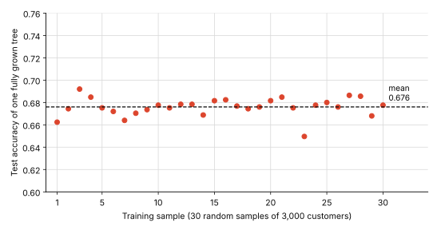
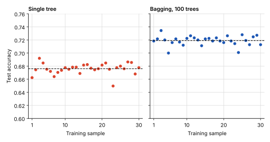
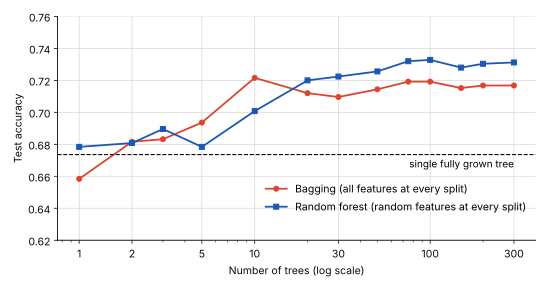
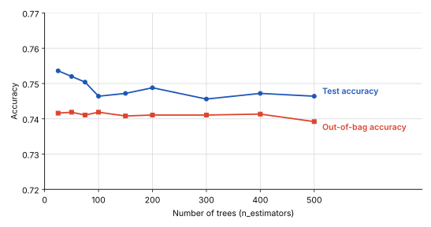
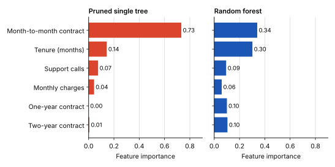

Classification
Random Forest: Why Many Trees Beat One
A telecom company trains a decision tree to predict churn. When it retrains on a slightly different sample of customers, the questions further down the tree change and some customers get a different prediction. Nothing about the business changed, only the sample.
This is the weak spot of a single tree: easy to read, but sensitive to the data it saw. A random forest fixes this by training many trees on different versions of the data and letting them vote.
In this post, you will learn why single trees are unstable, how bagging and random feature selection fix it, and how to train, tune and evaluate a forest. It builds on Decision Trees: Splitting Data into Clear Decisions.
In this article
Why a Single Decision Tree Is Unstable
Take a customer who has been with the company for 14 months, pays month to month (€73.60 a month) and called support three times. We train 30 fully grown decision trees, each on a different random sample of 3,000 customers from the same training table. All 30 trees start with the same question, Is the contract month-to-month?, yet 16 of them predict churn for this customer and 14 predict stay. Same method, same customer: the answer depends on which customers happened to be in the sample.
This is not a rare accident. Two trees trained on different samples give a different answer for about 23% of the customers in our test set. The reason is that a tree without limits keeps asking questions until every leaf contains only one kind of customer. A tree trained on 3,000 of our customers ends with almost 900 leaves, and a tree trained on all 3,750 training customers reaches a training accuracy of 99.6% against a test accuracy of 67.4%. Many of the late questions fit noise that belongs to one sample, and another sample brings different noise.
- Bias is the error of a model that is too simple to capture the pattern. A fully grown tree has very little of it.
- Variance is how much the model changes when the training sample changes. A fully grown tree has a lot of it.
The trade-off between the two is explained in Overfitting and Underfitting. Here the point is simple: a tree’s mistakes are partly random, and random mistakes can be averaged away.

Bagging: Averaging Many Trees to Reduce Variance
Bagging is short for bootstrap aggregating. The idea is to build many different training samples from the one table we have, train one tree on each, and combine the trees. The next two steps show how.
Step 1: Bootstrap Sampling
A bootstrap sample is made by drawing customers with replacement: after a customer is drawn, they are put back and can be drawn again. The sample has the same size as the original table, but some customers appear several times and others not at all. A small example with 10 customers, numbered 1 to 10, and 10 draws:
- Draws: 9, 7, 6, 3, 4, 1, 1, 1, 2, 9
- Appear more than once: customer 1 three times, customer 9 twice.
- Never drawn: customers 5, 8 and 10. This tree will not see them.
Every tree gets its own draw, so every tree sees a slightly different version of the same customers.
Step 2: Training and Voting
One fully grown tree is trained on each bootstrap sample. To predict a new customer, each tree votes and the majority wins. With five trees, for example, three might say churn and two stay: the prediction is churn, and the share of churn votes, 3 of 5 = 0.6, can serve as a churn score. In practice a forest uses 100 to 500 trees, so the score has many more possible values than a single tree’s leaf can give.
Why Averaging Reduces Variance
Think of each tree’s churn score for one customer as the true signal plus a random error that comes from its sample. If the errors of the trees are independent, they partly cancel when we average them. For B trees, each with error variance σ2, the variance of the average is:
Variance of the average = σ2B
Suppose one tree’s score fluctuates with a standard deviation of 0.20, so σ2 = 0.04. Averaging B = 100 independent trees gives a variance of 0.04 ÷ 100 = 0.0004, which is a standard deviation of 0.02, ten times smaller. This is the reason to average: the score of one customer becomes much steadier than the score of any single tree.
We can see it in the data. Two single trees trained on different samples disagree on about 23% of the test customers. Two bagged models of 100 trees each, trained on the same two kinds of samples, disagree on about 11.5%, half as often.

Out-of-Bag Observations
Step 1 left customers 5, 8 and 10 out of the sample. How many customers does a bootstrap sample usually leave out? The chance that one customer is not drawn in a single draw is 1 − 1/n, and a sample makes n draws:
P(not drawn) = (1 − 1n)nFor n = 10 this is 0.910 = 0.349. For n = 3,750 it is 0.368, which is the limit 1 ÷ e.
So each tree leaves out about 37% of the customers, and each customer is out of the bag for about 37% of the trees. This gives a free test: predict every customer using only the trees that never saw them, and compare with what really happened. The result is the out-of-bag (OOB) score, an honest accuracy estimate that needs no separate test set.
From Bagging to Random Forest: Why Tree Diversity Matters
The Problem: Bagging Trees Can Still Be Too Similar
Bagging gives every tree its own bootstrap sample, so we might expect very different trees. In practice, they are often not.
Think of our telecom churn data. Contract type is by far the strongest predictor. Even when a tree sees a different sample of customers, contract type is still the best first question, so almost every tree starts with it and many go on to learn similar rules.
Why does this matter? Imagine five colleagues who each estimate next month's churn. If they work with different data, one estimate is too high, another too low, and the mistakes cancel out in the average. If all five read the same report, they make the same mistake, and the average repeats it. Similar trees do the same: they misclassify the same customers, so the vote repeats the error instead of correcting it.
Averaging only helps as far as the trees make different mistakes. The next subsection shows this with numbers.
Why Correlation Matters
Let's put numbers on this. Every tree's prediction contains some random error. When we average B trees, the error of the average depends on two things: how large the error of a single tree is, and how alike the trees are.
Var(T) = ρσ2 + (1 − ρ) σ2B
- T = the average prediction of the B trees
- B = number of trees
- σ2 = variance of one individual tree
- ρ = correlation between the trees: 0 means completely different, 1 means identical
Just like the colleagues' mistakes, the formula has two parts:
- The first term, ρσ2: the shared mistakes. All trees make them together, like colleagues reading the same report. B does not appear here, so adding more trees cannot remove them.
- The second term, (1 − ρ) σ2 ÷ B: the individual mistakes. Each tree makes them on its own, so they cancel out as we add trees. The more trees, the smaller this term.
Two extreme cases make this clear. If the trees are identical (ρ = 1), the formula gives σ2, the same as a single tree, so a thousand copies of one tree achieve nothing. If the trees are completely independent (ρ = 0), only σ2 ÷ B is left, and the variance shrinks in proportion to the number of trees.
Let's assume each tree has a variance of 0.04 and we train 100 trees. What happens when their correlation changes?
| Tree correlation | Variance of average | Standard deviation |
|---|---|---|
| 0.0 | 0.00040 | 0.020 |
| 0.3 | 0.01228 | 0.111 |
| 0.8 | 0.03208 | 0.179 |
These are illustrative values, but they reveal an important pattern.
When trees are independent, averaging reduces variance substantially. When trees are highly correlated, much more variance remains, even with 100 trees.
Adding more trees mainly reduces the second term. The first term remains unchanged as long as the correlation stays the same.
The lesson: More trees help, but less correlated trees help more.
The Solution: Random Feature Selection
A random forest adds one rule to bagging: at every split, a tree may only look at a random subset of the features.
Our churn data has four features: contract type, tenure, monthly charges and support calls. At one split, a tree might only be allowed to look at tenure and support calls. At a split in another tree, the choice might be contract type and monthly charges. Each tree must find the best split among the features it is allowed to see.
Sometimes contract type is on the list, and sometimes it is not. When it is missing at the top of the tree, the tree has to start with a different question, such as tenure, and from there it grows a very different tree. It is like giving each colleague only part of the report: they can no longer all rely on the same strongest fact, so their estimates, and their mistakes, become less alike.
Each single tree gets a little weaker, because it sometimes cannot use the best feature. But the trees are now much less correlated, so the shared mistakes (the first term in the formula) become smaller and the average becomes better. Weaker alone, stronger together.
How many features does a tree get to see? By default, scikit-learn uses the square root of the number of features for classification, which you can change with the max_features setting.
Bagging creates diversity through different samples. Random feature selection creates additional diversity through different features. Together, they form a Random Forest.

Training a Random Forest in Python
The results in this post come from a simulated table of 5,000 customers, 36% of whom churned, with the columns contract, tenure_months, monthly_charges, support_calls and the target churned. The table is prepared as in Decision Trees: Splitting Data into Clear Decisions: the contract is one-hot encoded and 25% of the customers (1,250) are kept as a test set.
from sklearn.ensemble import RandomForestClassifier
forest = RandomForestClassifier(n_estimators=300, oob_score=True, random_state=42)
forest.fit(X_train, y_train)
print(f"Test accuracy: {forest.score(X_test, y_test):.3f}")
print(f"OOB accuracy: {forest.oob_score_:.3f}")- n_estimators=300. The forest grows 300 trees, each on its own bootstrap sample and with random features at every split (the default is the square root of the number of features).
- oob_score=True. scikit-learn also computes the out-of-bag score, using only the trees that did not see each customer.
- No scaling needed. Like a single tree, a forest works with the raw numbers.
With these defaults the forest reaches a test accuracy of 0.734. A single fully grown tree reached 0.674, and always predicting “stay” would be right for 63.9% of the test customers. The six points between 0.674 and 0.734 come from averaging alone. The OOB score is 0.702, a little lower than the test score. That is typical: each customer is voted on by only about a third of the trees, so the OOB estimate is a bit more pessimistic.
Key Hyperparameters of a Random Forest
A forest has few settings that matter, and they mostly control how different or how large the trees are:
| Hyperparameter | What it controls | Effect when increased |
|---|---|---|
| n_estimators | Number of trees | A steadier vote. Accuracy flattens after about 100 to 300 trees, so the cost is mainly time. |
| max_features | Features a split may choose from | More features make the trees more alike (higher ρ) but each tree stronger. |
| max_depth | Questions in a row | Deeper trees fit more detail and more noise. |
| min_samples_leaf | Customers needed in a leaf | Larger leaves smooth the predictions and reduce noise fitting. |
We tuned min_samples_leaf and max_features with 5-fold cross-validation on the training data (200 trees per forest). Each cell is the cross-validated accuracy; the best combination is highlighted.
| max_features | |||
|---|---|---|---|
| min_samples_leaf | 2 (square root) | 3 | 6 (all, = bagging) |
| 1 | 0.705 | 0.705 | 0.703 |
| 10 | 0.733 | 0.727 | 0.727 |
| 20 | 0.737 | 0.735 | 0.735 |
| 40 | 0.743 | 0.740 | 0.738 |
The pattern is clear: leaves of one customer, the default, are the weakest choice, and larger leaves help every column. The best forest uses min_samples_leaf=40 and the square root of the features, though the differences between the columns are small. With these settings (300 trees) the forest reaches 0.750 test accuracy and an OOB score of 0.743, and we use this forest in the rest of the post.
Evaluating a Random Forest
Out-of-Bag Score vs. Test Score
Remember that every customer is out of the bag for about 37% of the trees. The OOB score uses only those trees to predict that customer. It is like testing the forest on customers it has never seen, without setting aside a test set.
Why is this useful? A test set is precious. If we use it again and again to compare settings, we slowly tune the forest to that test set. With the OOB score we can tune on the training data alone and use the test set only once, at the end. It also helps when the dataset is small and we cannot spare 25% of it for testing.
Does it give the same answer as a real test set? Chart 6 compares both for forests of 25 to 500 trees.

The OOB score stays at about 0.74 and the test accuracy at about 0.75. That is a difference of roughly one point, smaller than the ±1.3 points of noise in our test set. The OOB score is slightly lower because each customer is judged by only about a third of the trees. Both lines are flat from about 100 trees on, so more trees do not change the picture.
Comparing with a Single Tree
Now the same test set and three models, all trained on the same 3,750 training customers:
- Fully grown tree. A single tree without any limits, like the trees in Chart 1, here trained on the whole training set.
- Pruned tree. A single tree whose size we limited. We chose the limits by cross-validation on the training data: we tried a
max_depthbetween 2 and 8 and amin_samples_leafbetween 1 and 50, and the best combination wasmax_depth=6andmin_samples_leaf=50. This is a new tree built for this comparison, not the one from Decision Trees: Splitting Data into Clear Decisions, which used a different table. - Random forest. The tuned forest from the previous section.
The pruned tree and the forest were tuned in the same way, on the training data only, so the comparison is fair. The metrics are explained in Common Logistic Regression Metrics and work in the same way here.
| Fully grown tree | Pruned tree | Random forest | |
|---|---|---|---|
| Accuracy | 0.674 | 0.754 | 0.750 |
| Precision (churn) | 0.547 | 0.631 | 0.631 |
| Recall (churn) | 0.552 | 0.765 | 0.738 |
| AUC | 0.648 | 0.817 | 0.824 |
- Against the fully grown tree, the forest wins clearly. Accuracy rises by 7.6 points and AUC by 0.18. This is the variance reduction from Chart 4 at work.
- Against a well-pruned tree, the gap is small. The accuracy difference of 0.4 points is far below the ±1.3 points of noise in the test set, and the forest has a slightly higher AUC (0.824 vs. 0.817). Its score is an average over 300 trees, so it can tell customers apart inside a region where a tree gives everyone the same value.
This is an honest picture of what a forest does. If one tree is already tuned carefully, the forest does not guarantee a big jump. What it gives is a model that is stable, ranks customers a little better and needs less careful pruning: even the default forest reached 0.734 without any tuning, while a default tree stayed at 0.674.
Feature Importance and the Interpretability Trade-Off
Feature Importance in a Forest
A forest measures importance in the same way as a tree: how much a feature reduces impurity across all its splits, here averaged over all 300 trees. Chart 7 compares it with the pruned tree.

Why Permutation Importance Is Safer
Impurity-based importance has a known weakness: it favors features with many possible split points. Monthly charges, a continuous number, gets 0.06 in the forest. A more direct test is permutation importance: shuffle one column of the test set, so that it carries no information, and measure how much accuracy drops. A large drop means the model relied on that feature (scikit-learn: permutation_importance).
- Month-to-month contract: −0.055. Shuffling it costs 5.5 points of accuracy.
- Tenure: −0.046 and support calls: −0.026. Both matter, tenure more.
- Monthly charges: 0.000. Shuffling it changes nothing, so the 0.06 above overstated it.
The two rankings agree on the main drivers, but permutation importance shows more clearly which features the forest could do without.
What You Give Up: Interpretability
A single tree can be read as a list of rules, and each prediction has a path you can show to a colleague. A forest of 300 trees has no single path. You can say which features matter and how well the model ranks customers, but you cannot give one rule that explains why a particular customer was flagged. Which side of this trade-off is right depends on the use. A retention team that only needs a ranked call list can work with a forest. A process that must justify each individual decision may be better served by a single tree or by Logistic Regression. A forest is also slower to train and predict, and takes more memory, than one tree.
How to explain it to stakeholders
“A single decision tree grown without limits is easy to read but unreliable: when we train it on different customers, it changes its answer for about one customer in four. So instead of one tree, we trained 300 and let them vote. Each tree sees a different random sample of customers and a different random selection of information at each step, and the vote is much steadier.
On customers the model had never seen, it classified 75% correctly. It found about 74 of every 100 customers who really cancelled, and about 63% of the customers it flagged did cancel. The strongest signals are the contract type, the length of the relationship and the number of support calls.
The trade-off is that we can show you which factors matter, but not one simple rule for each customer. The next business question is: which retention offer pays off for the customers at the top of the list, and what is the highest price we should be willing to pay to keep them?”
Key takeaway
A fully grown decision tree has high variance, so a different sample gives different rules. Bagging averages many trees trained on bootstrap samples, and a random forest adds random features at every split so that the trees are less alike and the vote gains more. Compared with an unpruned tree, a forest is much more accurate and stable, while compared with a well-tuned tree the gain is smaller and you give up the readable rules.
Related posts
- Decision Trees: Splitting Data into Clear Decisions The single tree that a forest is built from.
- Overfitting and Underfitting The bias-variance trade-off behind bagging.
- Common Logistic Regression Metrics Precision, recall and AUC in detail.
- One-Hot Encoding How the contract type becomes numeric columns.